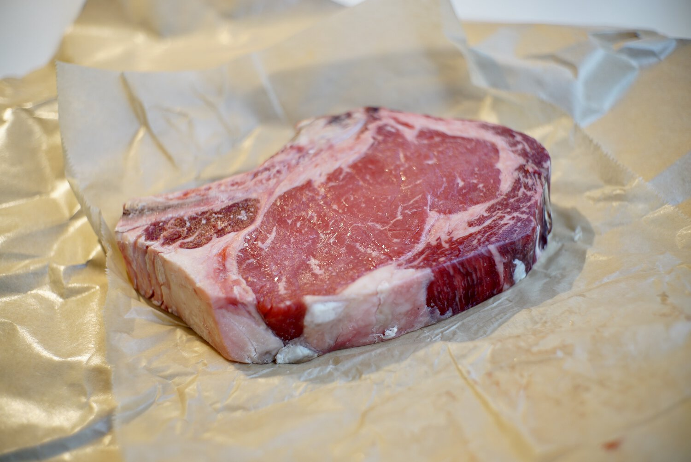
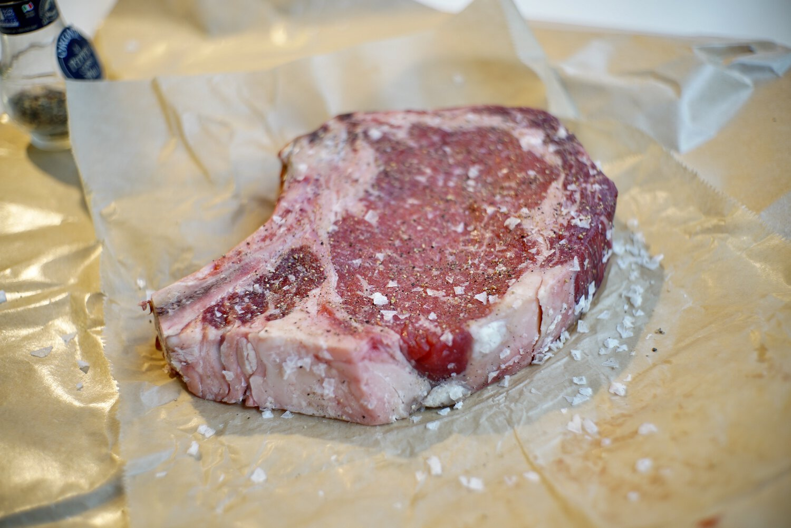
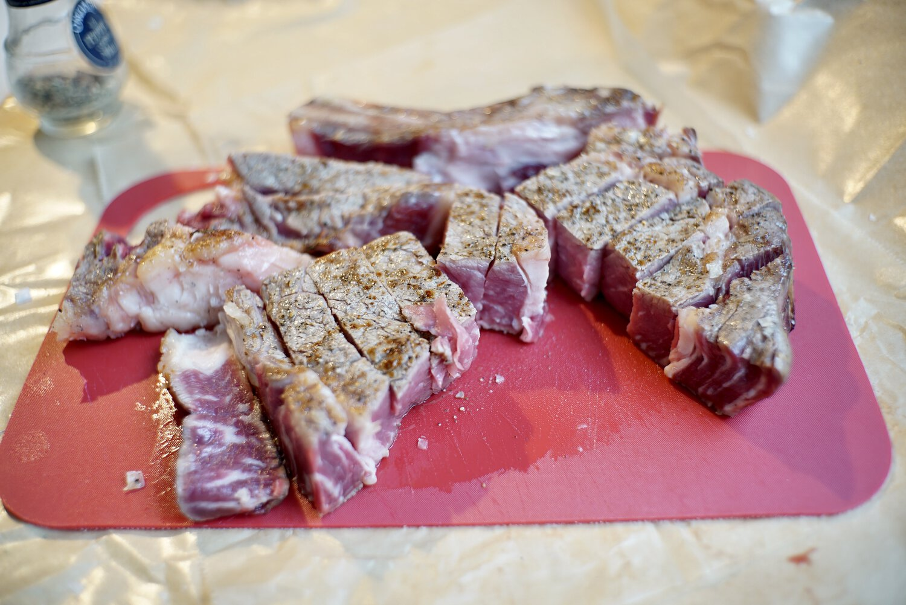
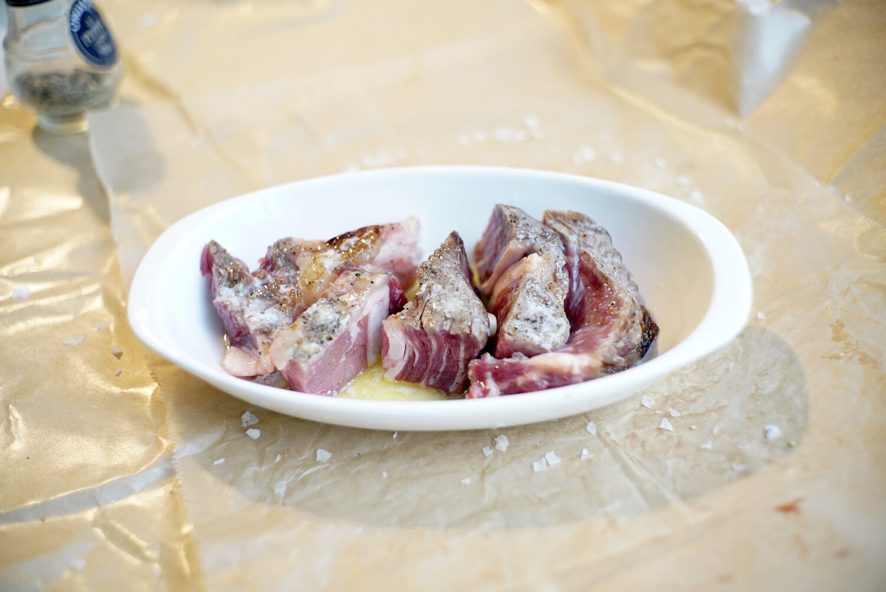
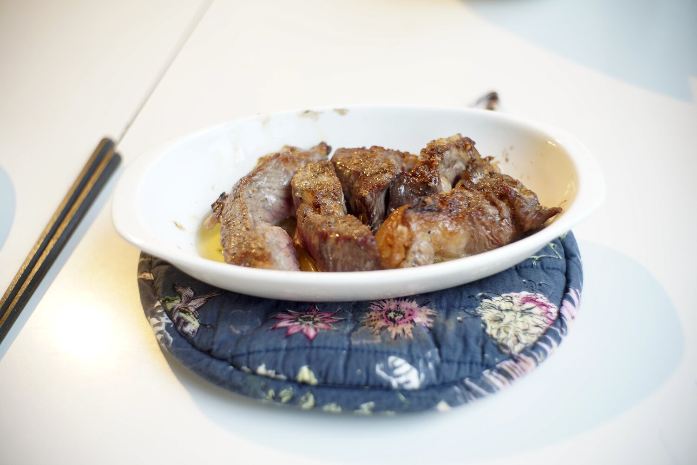
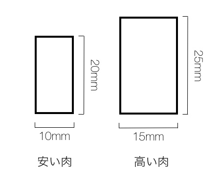

steak
一年前くらいに、母親がアメリカにきてくれて、その時、ニューヨークに行ってピーター・ルーガーなるステーキ屋さんに行って贅沢をさせてもらった。日本の焼肉は、いろんなところに行ったけど、アメリカの由緒正しきステーキハウスに行くのは初めてで、ドライ・エイジドビーフというコンセプトから、いろいろ考え方が払拭されたのでありました。
で、いきなりそれを家で再現しようということになり、ホールフーズで柔らかそうな肉を買い、試してみたら、それは 125 年以上の伝統にかなうわけではないが、案外再現性が高く、手軽さから次も作りそうなので、ここに健忘録としてプロセスを記述しておく。
1 材料
- 1 インチよりも少し薄い(20mm)くらいの厚みの肉で、１パウンド(450g)を手に入れた。熟成肉でもなんでもなく、部位は普通のリブアイ・ロース。$20 のものを購入した。 1
- 無塩バター 30g
- 粒度の荒い塩。普通の胡椒。
2 手順

Figure 1: 写真は二回目の挑戦にとったものなので、厚みが少し違います。
事前準備として、肉を冷蔵庫からだし、常温に戻しておいた。オーブンは華氏 350 度で温めておいた。が、基本的にブロイルだったので熱くなっていればいいと思う。オーブンから出てくる熱でバターを溶かしておいた。

Figure 2: 塩はこれより少し多めの方がいい。
ここでフライパンを最大火力まで熱する。その間に、肉を塩（強め）・胡椒をしておく、側部もしっかり塗り込む。浸透圧の関係で水が出てくるのを避ける為にと考え直前に行った。
フライパンで各面 1 分弱焦げ目がつくくらい焼く、フライパンの縁で肉の側面を焼き、側面を焼き固める印象。これでフライパンは終わり。

Figure 3: フライパンで外側を焼いた後。叩き状態になっている。
肉をまな板に戻し、1センチ厚にに切る。カツオの叩きのようになっており、側部だけ焼かれているので、肉汁はほとんど出ない。
そのあと深めの皿に盛り付け、バターをありったけかける。ここの工程ははそんなに焦らずゆっくりやって良い。ここで、ニンニクを少しだけ輪切りにして盛り付けた、思った以上に効いた。やってもひとかけざっくりがいいと思う。

Figure 4: バターをたっぷりかける
実験の為、今回は二皿に分けて、一つをオーブンの上段、一つを下段にのせ、ブロイルで 6 分間焼いた。
サービングは本家では、別の小皿を使って、皿を傾け、バターと肉汁が皿の一箇所に偏るように配置し、バターと肉汁が混ざった汁を食べる直前に掛け湯して食べる。

Figure 5: 写真で示すのも失敗しているが、皿を傾斜させて、バターを一箇所にまとめる。
結果的に、下段バージョンの方が美味しかった。これで焼き加減は medium well だった。このままでも十分美味しかったが、仮説の更新として、次回は medium と medium well の間を狙うべく、下段で 5 分半を試してみるといいかもしれない。もっと生がいい場合はもう少し短くするか、さらに短くして、上段にするのがいいかと思う。焼き加減は厚みにも影響すると思われるので、1 インチ厚で実験を進めたい。
塩振りの部分はそれぞれのレストランでこだわりが多いんだろうと思う、最適な焼き加減が分かったら、その部分に踏み込むのもいいかもしれない。何にしろ、ステーキ（肉）の焼き加減はとても難しいと聞いていたので、それが初めての試行でここまで美味しかったので嬉しかった。
物量として焼肉で食べるよりも多く厚いので食べにくいかと思ったが、日本の霜降りではないので脂分が少なく食べやすかった、胃もたれも焼肉よりもしないかもしれない。
初めて、アメリカ的なものを家で作って食べた気がするが、前述のステーキ・ハウスは 2020 年に日本へも出店するらしいので、日本の焼肉のオルタナティブとして皆さんも研究に邁進されればいいと思う。
3 結果
| 日付 | 肉部位・商品 | 重さ lbs.(g) | 断面 (mm) ※1 | 価格 USD | 単価(円/100g) | 焼き時間(分) | 結果 |
| 08-05 | ボーンレスリブアイ | 1 (450) | 20 x 10 | 20 | 約 500 | 下段 6 分 | MW |
| 08-16 | ドライエージドリブアイ | 1.5 (680) | 25 x 15 | 68 | 約 850 | 下段 6 分 | MW |
| 09-05 | ボーンレスリブアイ | 0.83 (376) | 22 x 10 | 12.44 | 約 350 | 下段 5.5 分 | M |
| 09-20 | ボーンレスリブアイ | 1.03 (467) | 25 x 10 | 19.54 | 437 | 上段 5.5 分 | MR |
※1: 肉の厚み x 切幅
Medium を狙っていきたい。
3.1 単価計算
usd2jpy = 104.56 lbs = 1.03 usd = 19.56 def jpy_per_100g (lbs, usd): grams = lbs * 453.5924 jpy = 19.56 * usd2jpy return (jpy/grams) * 100.0 return int(jpy_per_100g(lbs, usd))
4 2020-08-16 追記
前回の再現度が高かったので、調子に乗って高価な肉で実験を続けた。加えて塩も flake ソルトなるものに変更した。以後の試行は結果の表にまとめていきたい。
前回の作り方でも分かるとおり、最初にフライパン（強火）で電動熱でまず表面を焼き、その後、オーブンのブロイルで対流熱（による伝道）と二段階で焼いている。ブロイルなので、日本の家庭ではよくみられる、魚焼グリルに近い。皿の下部はバターが溜まっているので、そこでも対流熱によって調理が進むものと考える。したがって日本でオーブンが無い場合は、グリルで実験を行うと良さそうだ。他のレストランでは、フライパン後、真空パックに入れ、茹でている（炊いている?）動画もあったが、対流によって内部に火をいれる役目は同じである。
奮発をして購入した肉だが、ドライエージドと言われ、本家のピーター・ルーガーもこの乾燥熟成させた肉である。グラム 850 円と前回に比べるとおいそれと買えるものではないが、日本で同じような肉を手に入れようとすると 1000 円をゆうに超えるものが多いので、これもまた需要と供給の違いによって手に入りやすさが変わってくる。日本の相場を調べてると脂肪分の多い和牛にドライエージングを施したものがあるが、主に熟成過程ではタンパク質の変質しているのでここで重要なのは赤身なのではないかと疑問に思った。
ただし、高級な肉の場合は肉質が柔らかいと考えられるので、幅も前回よりも 5mm 増やし、 15mm とした。これによって肉の「かぶりつき」感が増えたと感じる。

Figure 6: 厚みと価格
だけど、我が家では 1.5 lbs は多すぎる。
5 2020-09-05 追記
今までで最も安い肉で、肩の力をぬいて挑戦。普通に美味しかった。リブアイの中でも脂（その eye の近く）にちかいところはとても柔らかく、ジューシーだった。それ以外の赤身の部分も十分美味しかったが、硬さで言うと、ロースカツみたいな感じ。時間と厚みを調整しておいてよかった。金を出せば、確かに肉のクオリティは上がるが、だからと言って安い肉が全然ダメだと言うことでもない。
段取りが板についてきた。バターの量は 60g とたっぷりにしておいた。フレーク塩を使った塩加減も前回よりも強めにし、ちょうどよかった。
6 2020-09-20 追記
最初に買ったものと似たグレードのものを手に入れる。コストパフォーマンス的にこれが一番良いとの評判。上段 5.5 分で赤身が残るもの程度となった。さらに均質に焼くためには器にあまり入れすぎない方がいいのかもしれない。バターは 40g で今回初めて、有塩バターを使った。塩加減はちょうど良い、美味。もう少しだけ、オーブンが温まるのを待った方がよかったか？
Footnotes:
大体 100g 400 円から 500 円くらいの肉、イオンやコストコで買えるものです。いわゆるアメリカで食べられているステーキの需要が違うので、同質かどうかは分かりません。